O corte é seu.
O resto é ofício.
Ternos, blazers e esporte fino construídos peça por peça, sobre as suas medidas — não as de um manequim. Da primeira prova ao acabamento final, cada detalhe é decidido junto com você.
Cada peça, uma decisão sua
Do terno de cerimônia ao esporte fino do dia a dia — construção sob medida em cada categoria.
Ternos & Blazers
Corte estruturado sob medida, do risco de giz à prova final. Para casamentos, formaturas e o dia a dia de quem se veste com intenção.
Esporte Fino
Peças versáteis que transitam do escritório ao compromisso social, sem perder o caimento sob medida.
Ajustes & Reparos
Terno de prateleira não veste igual a um feito pra você. Ajustamos caimento, comprimento e estrutura da peça que já é sua.
Acessórios
Cintos, lenços de bolso e os detalhes finais que fecham o conjunto — escolhidos junto com a peça principal.
Da medida ao acabamento
Um processo com quatro etapas — nenhuma pulada, nenhuma pressa.
Consulta & medidas
Conversamos sobre ocasião, caimento e tecido. Suas medidas são tiradas com calma — é a base de tudo que vem depois.
Escolha do tecido
Você decide entre as opções de tecido e acabamento, com orientação sobre o que combina com a ocasião e a estação.
Prova
A peça é ajustada no seu corpo, ao vivo. Pequenos ajustes de caimento são feitos aqui, antes do acabamento final.
Entrega
A peça finalizada, pronta pra vestir. Ajustes pós-entrega estão sempre à disposição, se algo precisar de retoque.
Uma paleta pra cada ocasião
Uma pequena amostra do que trabalhamos — a seleção completa está disponível na loja.
Textura sutil, tingimento no fio
Tecido PV Elastano com fio tingido antes da tecelagem — resultado num acabamento levemente texturizado e uniforme, diferente do liso tradicional. Toque macio, com leve elasticidade.
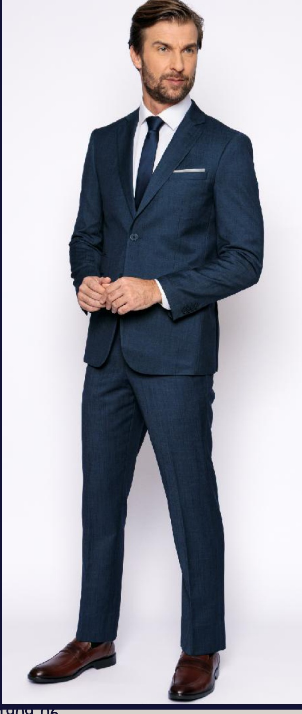
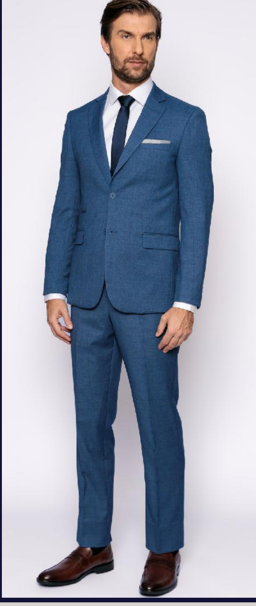
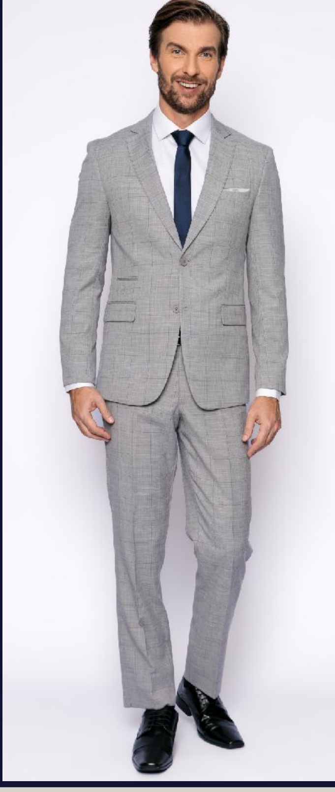
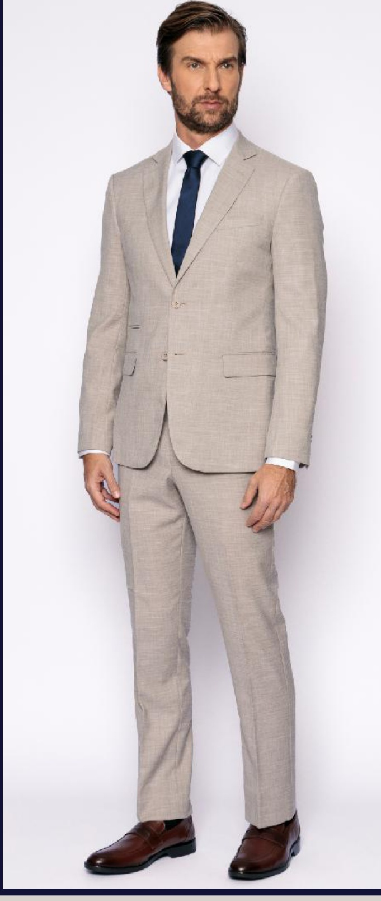
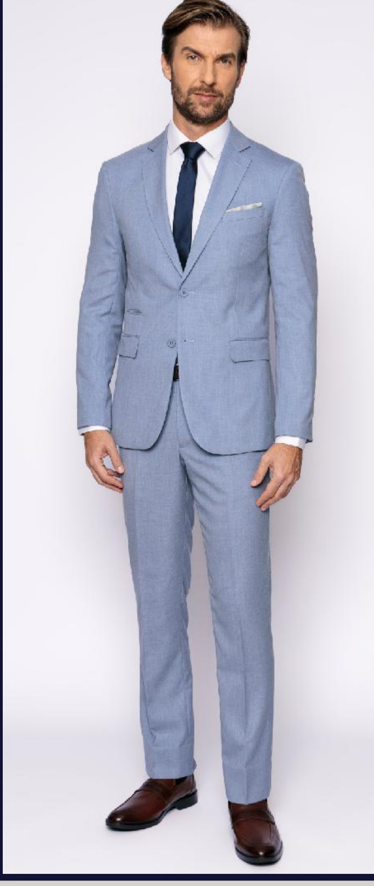
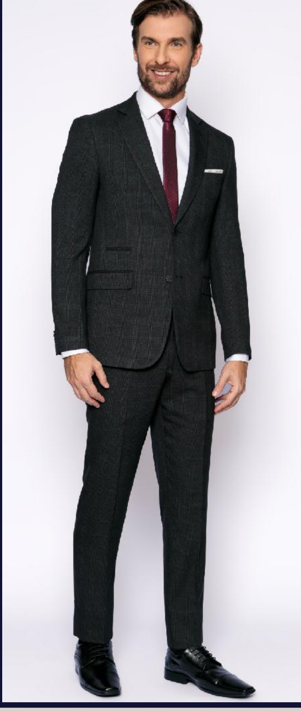
O clássico sob medida, sem textura aparente
Tecido PV Elastano liso — acabamento uniforme e discreto, a base mais versátil para cerimônia, trabalho ou uso diário. Disponível também em colete no mesmo tecido.
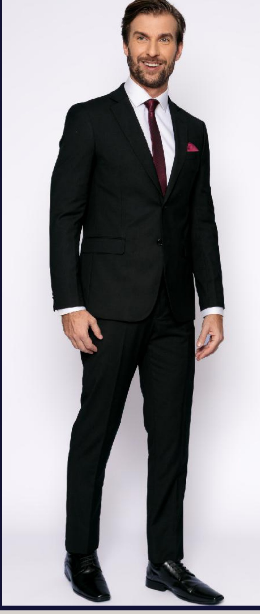
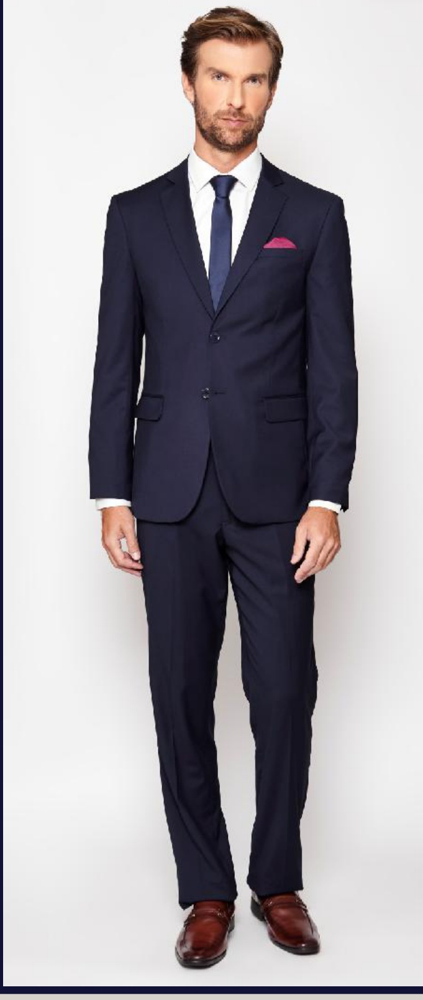
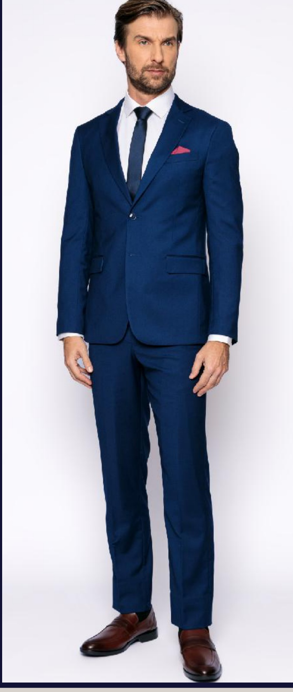
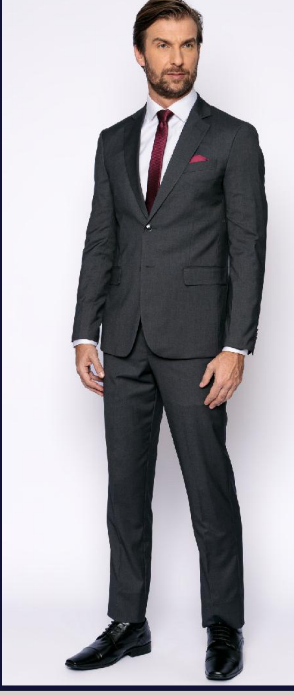
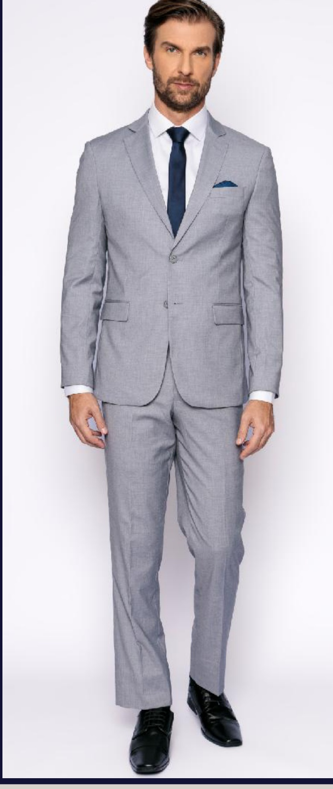
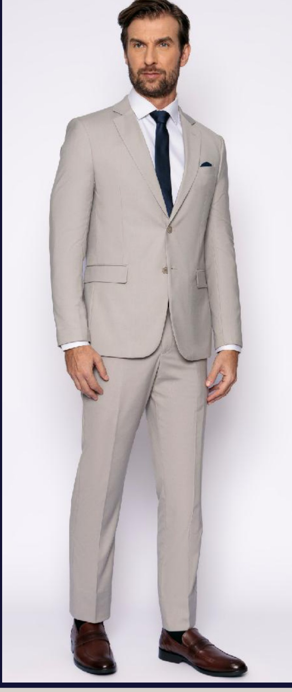
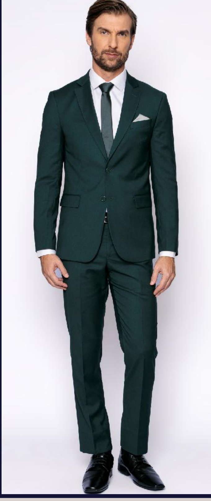
Tecido 100% poliéster, resistência no dia a dia
Trama Oxford — mais firme e durável, ideal para quem usa o terno com frequência e precisa de uma peça que aguenta a rotina sem perder o caimento.
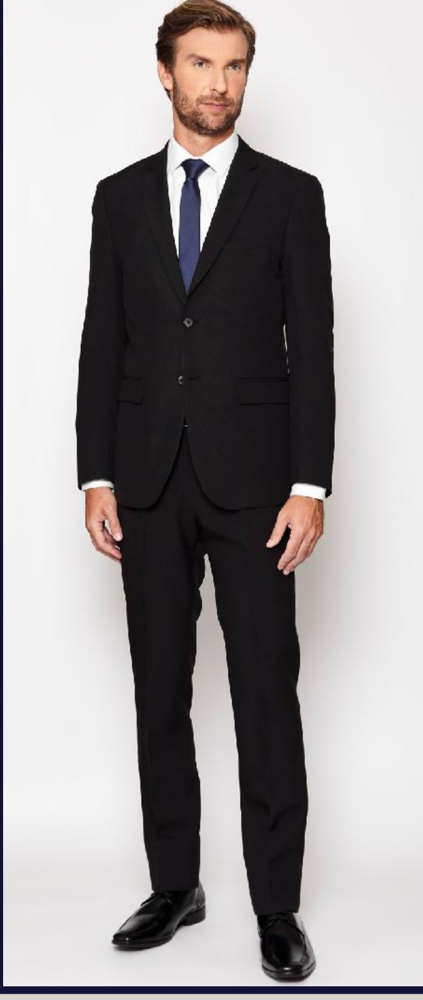
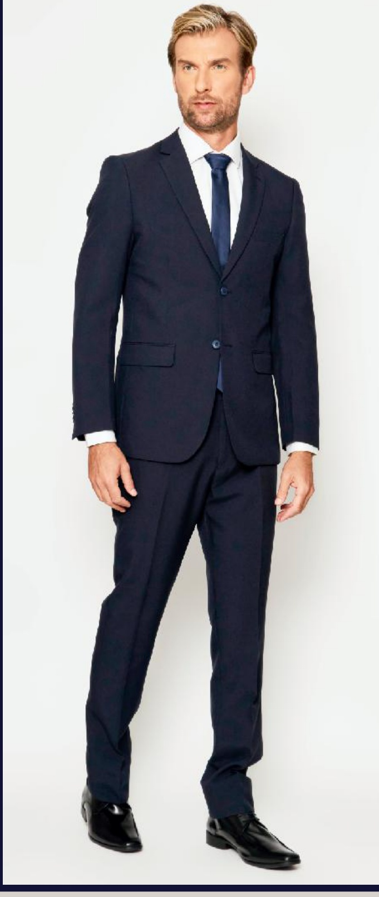
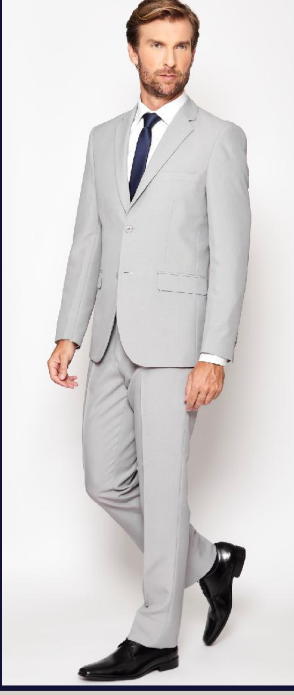
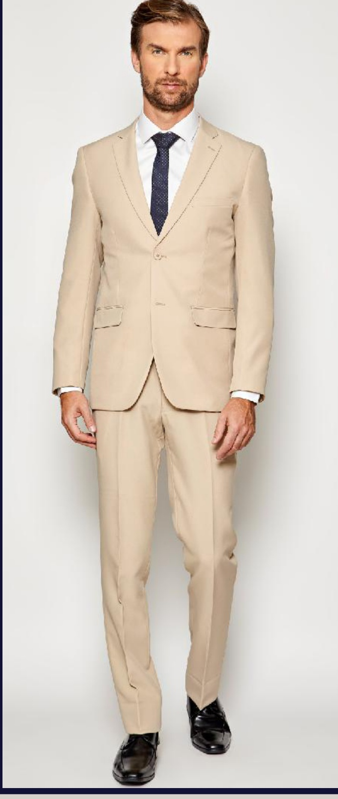
Leveza para o calor carioca
Mistura de lã com poliéster em trama mais aberta e respirável — feito para manter o caimento formal sem pesar no dia quente.
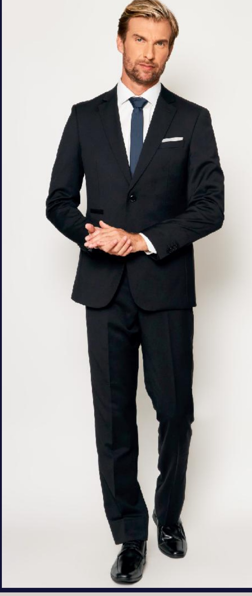
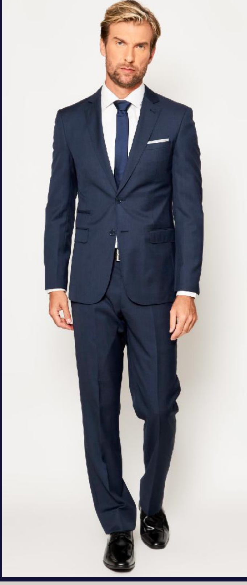
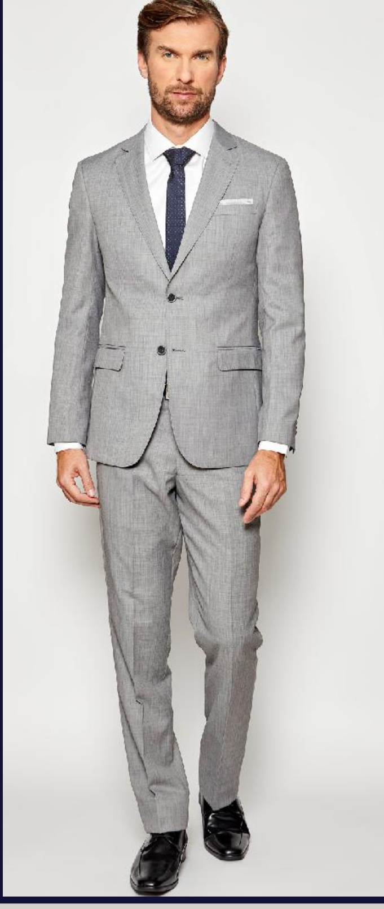
O tecido nobre da alfaiataria clássica
Lã pura ou em mistura predominante — caimento superior e durabilidade, para quem busca a peça mais tradicional do guarda-roupa formal.
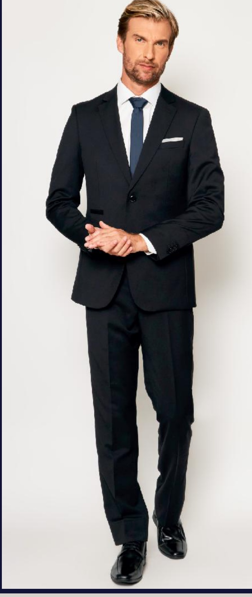
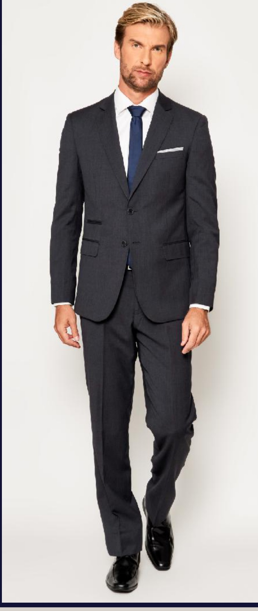
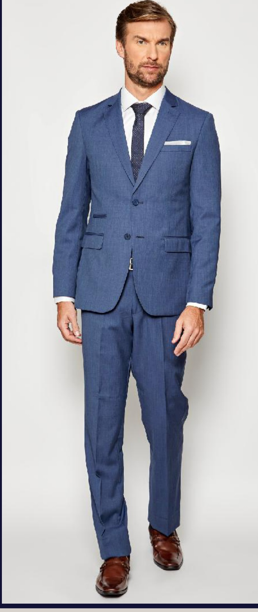
Peças que já saíram daqui
Uma seleção do que construímos — cada peça pode ser replicada ou adaptada sob medida para você.


Piso 1, entre uma corrida e outra ninguém te apressa aqui.
Shopping Nova Iguaçu (Pedreira)
Piso 1, Loja 3034
(21) 97267-2477